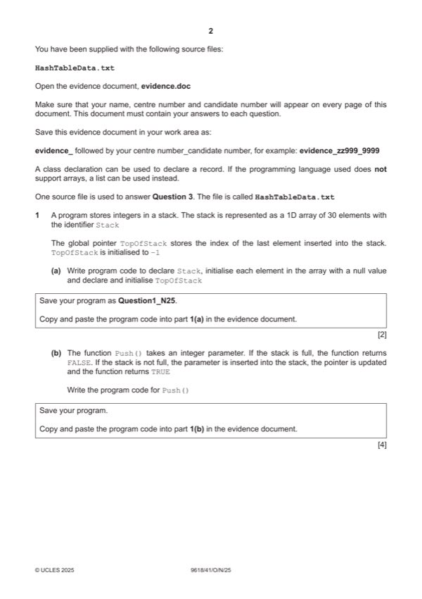

Question 1

Original paper page 2
Part 1(a) — solution
- (Global) 1D array initialised with 30 null values
- (Global) TopofStack initialised with –1
Visual Basic (VB.NET)
Dim Stack(29) As Integer
Dim TopOfStack As Integer
Sub Main(args As String())
For x = 0 To 29
Stack(x) = Nothing
Next
TopOfStack = -1
End Sub
Python
Stack = [None for x in range(30)]
TopOfStack = -1
University Press & Assessment 2025 Page 6 of 36
9618/41 Cambridge International AS & A Level – Mark Scheme October/November 2025
Mark points
- (Global) 1D array initialised with 30 null values
- (Global) TopofStack initialised with –1
Part 1(b) — solution
- Function header (and end) taking one parameter, returning Boolean in all instances
- Checking if stack is full (TopOfStack = 29) and, if it is, returning FALSE
- Incrementing TopofStack
- (Otherwise) Storing parameter in incremented TopOfStack position and returning TRUE
Visual Basic (VB.NET)
Function Push(DataToPush)
If TopOfStack < 29 Then
TopOfStack = TopOfStack + 1
Stack(TopOfStack) = DataToPush
Return True
End If
Return False
End Function
University Press & Assessment 2025 Page 7 of 36
9618/41 Cambridge International AS & A Level – Mark Scheme October/November 2025
Mark points
- Function header (and end) taking one parameter, returning Boolean in all instances
- Checking if stack is full (TopOfStack = 29) and, if it is, returning FALSE
- Incrementing TopofStack
- (Otherwise) Storing parameter in incremented TopOfStack position and returning TRUE
Part 1(b) — solution
- TopOfStack = TopOfStack + 1
- Stack[TopOfStack] = DataToPush
Python
def Push(DataToPush):
global Stack
global TopOfStack
if TopOfStack < 29:
TopOfStack = TopOfStack + 1
Stack[TopOfStack] = DataToPush
return True
else:
return False
University Press & Assessment 2025 Page 8 of 36
9618/41 Cambridge International AS & A Level – Mark Scheme October/November 2025
Mark points
- TopOfStack = TopOfStack + 1
- Stack[TopOfStack] = DataToPush
Part 1(c) — solution
- Function header (and end) returning integer in all cases
- Checking if stack empty (TopofStack = –1) and returning -999 when true
- (Otherwise) Accessing and returning item at TopOfStack (before it's decremented)
- Decrementing TopofStack
Visual Basic (VB.NET)
Function Pop()
If TopOfStack = -1 Then
Return -999
Else
Dim DataReturn As Integer = Stack(TopOfStack)
TopOfStack = TopOfStack - 1
Return DataReturn
End If
End Function
University Press & Assessment 2025 Page 9 of 36
9618/41 Cambridge International AS & A Level – Mark Scheme October/November 2025
Mark points
- Function header (and end) returning integer in all cases
- Checking if stack empty (TopofStack = –1) and returning -999 when true
- (Otherwise) Accessing and returning item at TopOfStack (before it's decremented)
- Decrementing TopofStack
Part 1(c) — solution
- if TopOfStack == -1:
- DataReturn = Stack[TopOfStack]
- TopOfStack = TopOfStack - 1
Python
def Pop():
global Stack
global TopOfStack
if TopOfStack == -1:
return -999
else:
DataReturn = Stack[TopOfStack]
TopOfStack = TopOfStack - 1
return DataReturn
University Press & Assessment 2025 Page 10 of 36
9618/41 Cambridge International AS & A Level – Mark Scheme October/November 2025
Mark points
- if TopOfStack == -1:
- DataReturn = Stack[TopOfStack]
- TopOfStack = TopOfStack - 1
Part 1(d) — solution
- Looping 40 times
- Generating random number between 0 and 1000 inclusive inside the loop
- Calling Push() with each random number and storing/using return value … … if return value is FALSE output Stack
Visual Basic (VB.NET)
For x = 0 To 39
Pushed = Push(RandomNumber.Next(0, 1000))
If Pushed = False Then
Console.WriteLine("Stack full")
x = 40
End If
Next
Python
for x in range(40):
Pushed = Push(random.randint(0,1000))
if Pushed == False:
print("Stack full")
break
University Press & Assessment 2025 Page 11 of 36
9618/41 Cambridge International AS & A Level – Mark Scheme October/November 2025
Mark points
- Looping 40 times
- Generating random number between 0 and 1000 inclusive inside the loop
- Calling Push() with each random number and storing/using return value … … if return value is FALSE output Stack
Part 1(e) — solution
- Procedure header (and end) and output of highest and lowest include appropriate messages
- Calls Pop() until there are no items left in stack (return value = –999 // TopOfStack = -1) and
- Finds and outputs highest value from returned values
- Finds and outputs lowest value from returned values
Mark points
- Procedure header (and end) and output of highest and lowest include appropriate messages
- Calls Pop() until there are no items left in stack (return value = –999 // TopOfStack = -1) and
- Finds and outputs highest value from returned values
- Finds and outputs lowest value from returned values
Part 1(e) — solution
- Highest = Pop()
- Lowest = Highest
- Dim ReturnValue As Integer = Highest
- Highest = ReturnValue
- Lowest = ReturnValue
- ReturnValue = Pop()
- Highest = Pop()
- Lowest = Highest
- ReturnValue = Lowest
- while(ReturnValue != -999):
- Highest = ReturnValue
- Lowest = ReturnValue
- ReturnValue = Pop()
Visual Basic (VB.NET)
Sub FindValues()
Dim Highest, Lowest As Integer
Highest = Pop()
Lowest = Highest
Dim ReturnValue As Integer = Highest
While ReturnValue <> -999
If ReturnValue > Highest Then
Highest = ReturnValue
End If
If ReturnValue < Lowest Then
Lowest = ReturnValue
End If
ReturnValue = Pop()
End While
Console.WriteLine("The highest value is " & Highest & " and the lowest value is " &
Lowest)
End Sub
Python
def FindValues():
Highest = Pop()
Lowest = Highest
ReturnValue = Lowest
while(ReturnValue != -999):
if ReturnValue > Highest:
Highest = ReturnValue
if ReturnValue < Lowest:
Lowest = ReturnValue
ReturnValue = Pop()
print("The highest value is", Highest, "and the lowest value is", Lowest)
University Press & Assessment 2025 Page 13 of 36
9618/41 Cambridge International AS & A Level – Mark Scheme October/November 2025
Mark points
- Highest = Pop()
- Lowest = Highest
- Dim ReturnValue As Integer = Highest
- Highest = ReturnValue
- Lowest = ReturnValue
- ReturnValue = Pop()
- Highest = Pop()
- Lowest = Highest
- ReturnValue = Lowest
- while(ReturnValue != -999):
- Highest = ReturnValue
- Lowest = ReturnValue
- ReturnValue = Pop()
Part 1(f)(i) — solution
1 mark for calling FindValues() 1
Example program code
VB.NET
FindValues()
Python
FindValues()
Visual Basic (VB.NET)
FindValues()
Python
FindValues()
Mark points
- Include the ideas shown in the solution above.
Part 1(f)(ii) — solution
1 mark for a screenshot of output showing 1
Stack full output once
Lowest value output in an appropriate message
Highest value output in an appropriate message
Lowest and Highest must be 0–1000 inclusive
University Press & Assessment 2025 Page 14 of 36
9618/41 Cambridge International AS & A Level – Mark Scheme October/November 2025
Mark points
- Include the ideas shown in the solution above.